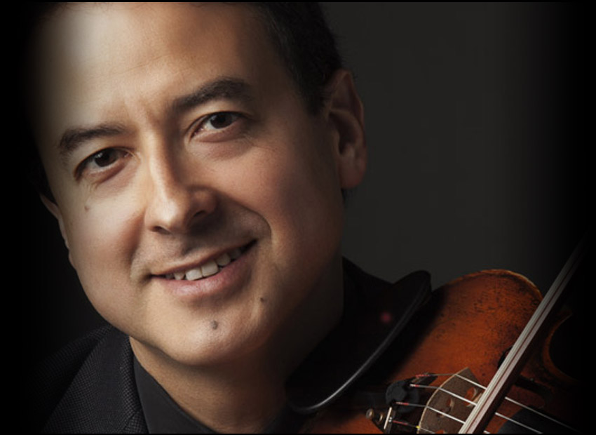

![Egresado de la Universidad Javeriana de Bogotá, con maestría en interpretación de la Universidad DePaul en Chicago, Francisco Iragorri se desempeñó como violinista de la Orquesta Sinfónica de Colombia por trece años, y participó en cuatro sesiones de la Orquesta Mundial de Juventudes Musicales realizando giras por 12 países de Europa y América. Ha actuado también como miembro de la Orquesta Juvenil de la Radio de Berlín RIAS, la Orquesta del Noroeste de Indiana, y la Orquesta de Cámara Javeriana siendo concertino. También destacadas fueron sus interpretaciones en los festivales de música contemporánea de Northwestern University en Chicago, y como miembro del ensamble de música contemporánea Decibelio en los festivales de Quito y de Bogotá. En el campo de la música de cámara ha participado en agrupaciones como el Cuarteto DePaul en Chicago, el Quinteto Tempus en Bogotá, y fué miembro fundador del Cuarteto Manolov durante tres años. Actualmente integra el Cuarteto Santa Fé, es violinista de la Orquesta Sinfónica Nacional de Colombia, y es profesor en la Universidad Javeriana de Bogotá.](images/u811-7.png)